Painting · Digital · Triptych
Avatar
This triptych piece explores formative experiences as narratives and connections.
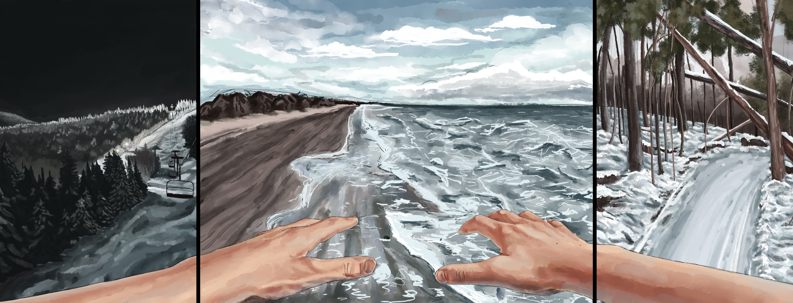
01
About the work
Skiing (left) represents the present, a lifelong activity I still enjoy. The beach (middle) symbolizes the past, recalling family reunions that no longer happen. Snowmobiling (right) signifies the future, a new pursuit that will shape my life ahead. The past is centered to show its lasting significance—just because it has passed doesn’t mean it isn’t important now or in the future.
Apply video game perspective; see my experiences as narratives and connection points in themselves.
02
Sketchbook
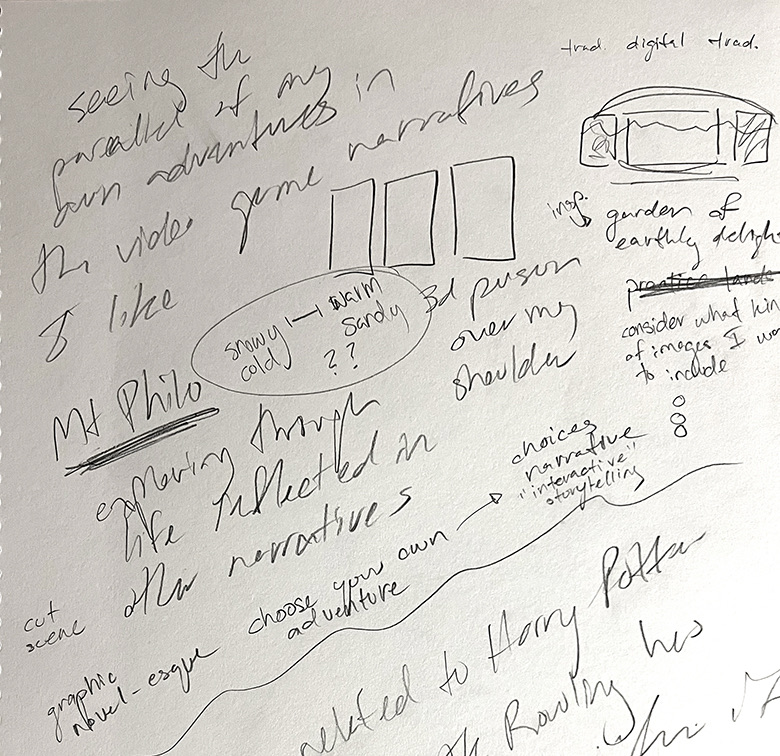
Notes 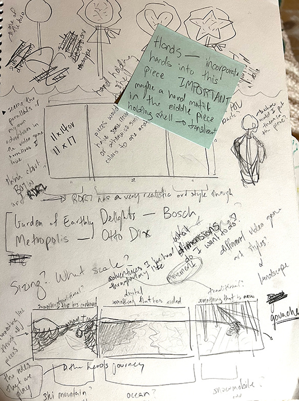
Ideas and references 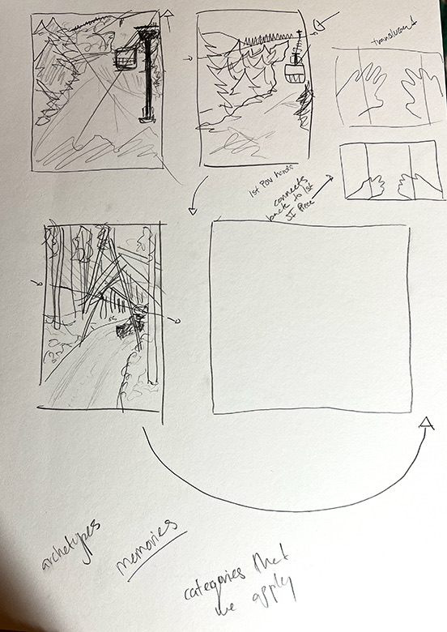
Thumbnails
Explore ways to show my experiences; movement by line and texture; hands inspired by video game.
03
Studies
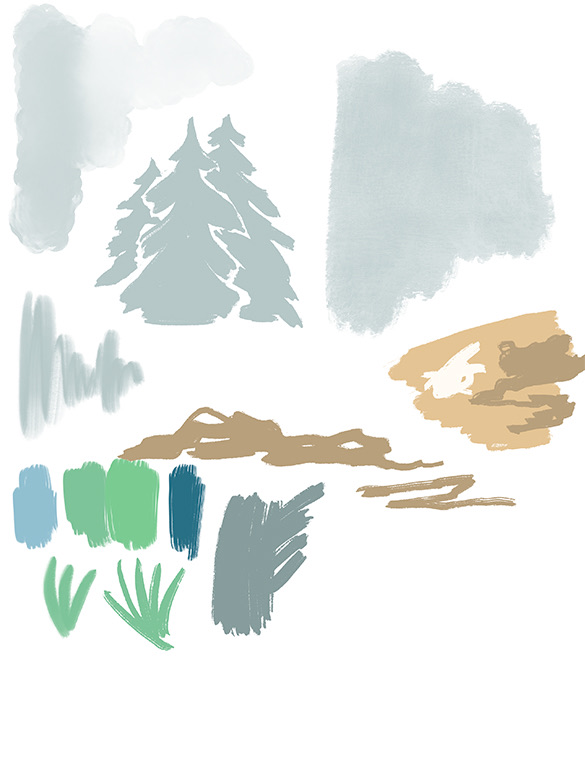
Swatches 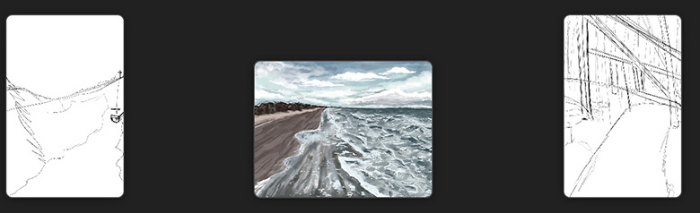
Triptych layout 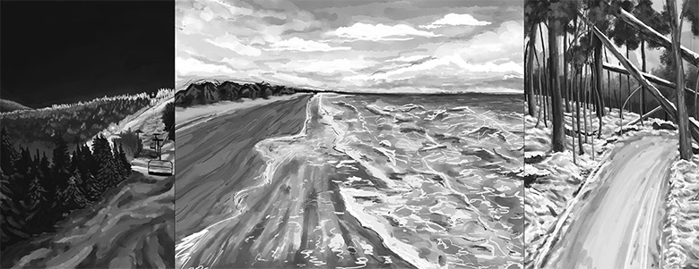
Value study
Piece 5’s landscapes aren’t something I usually do.
04
In progress
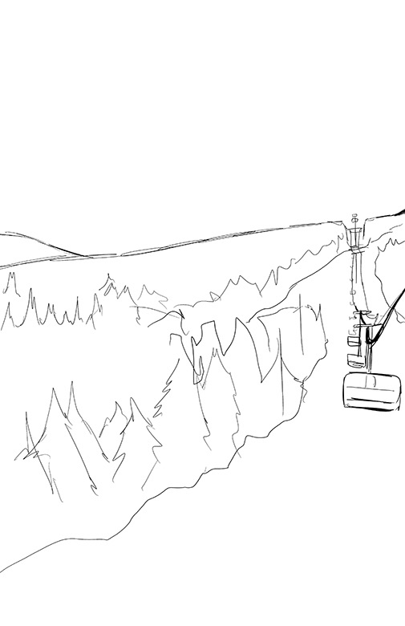
Present — lines 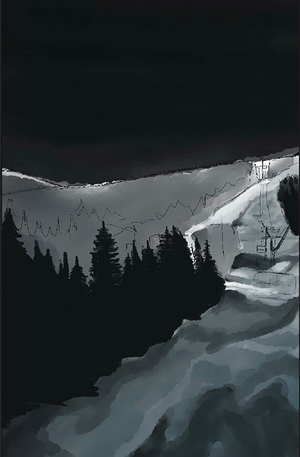
Present — blocking 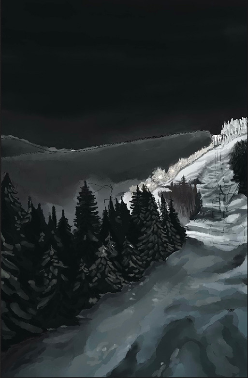
Present — rendering 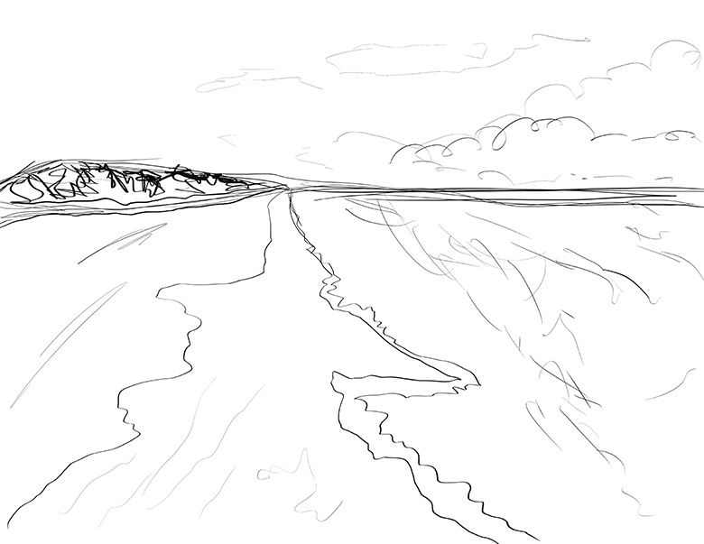
Past — lines 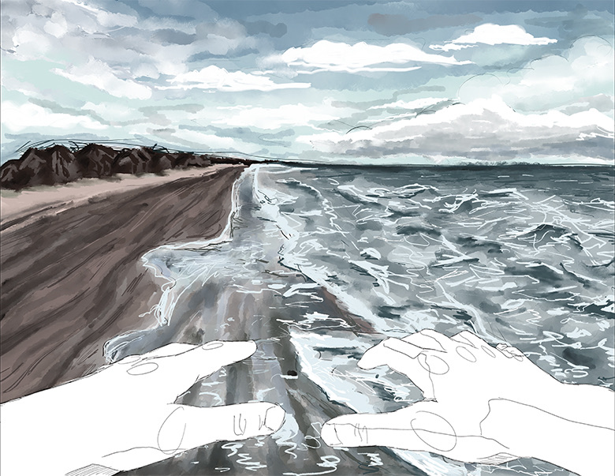
Past — hands in outline 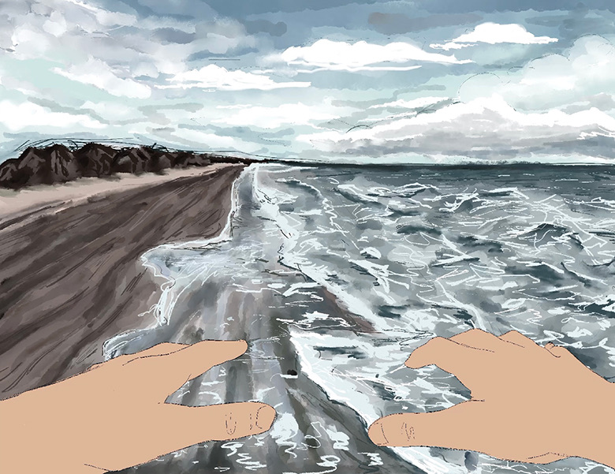
Past — hands blocked 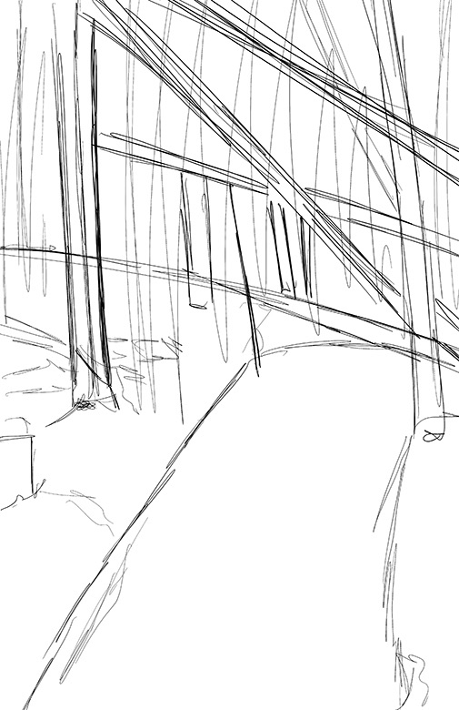
Future — lines 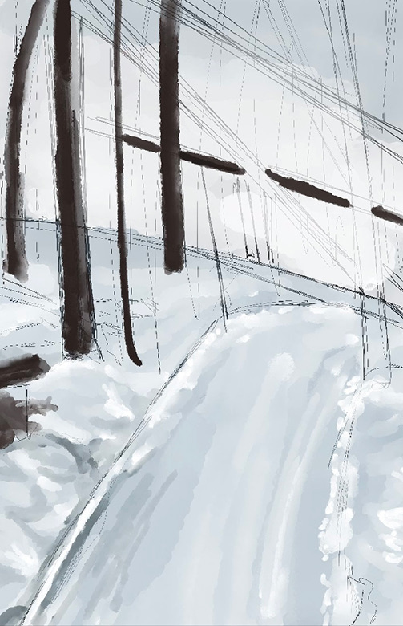
Future — blocking 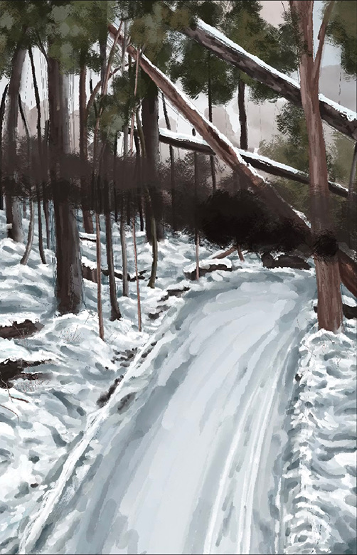
Future — rendering
Experiment with texture and blocked sketchy style for visual interest, explore value range.
05
Final
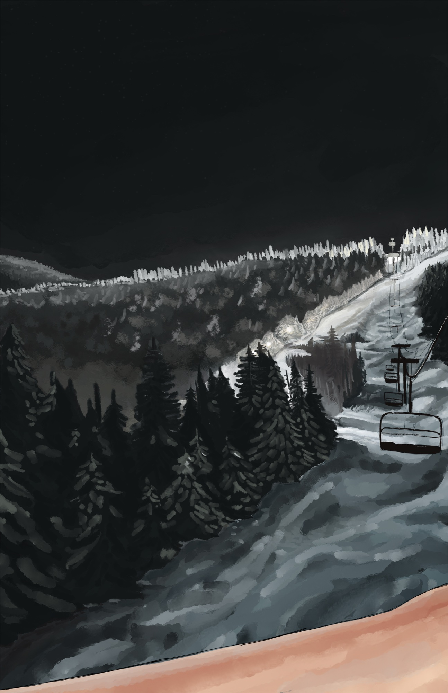
Present — skiing 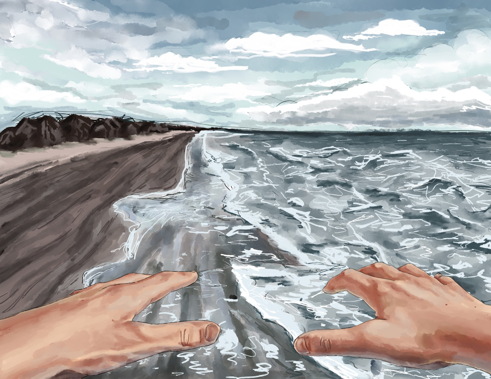
Past — the beach 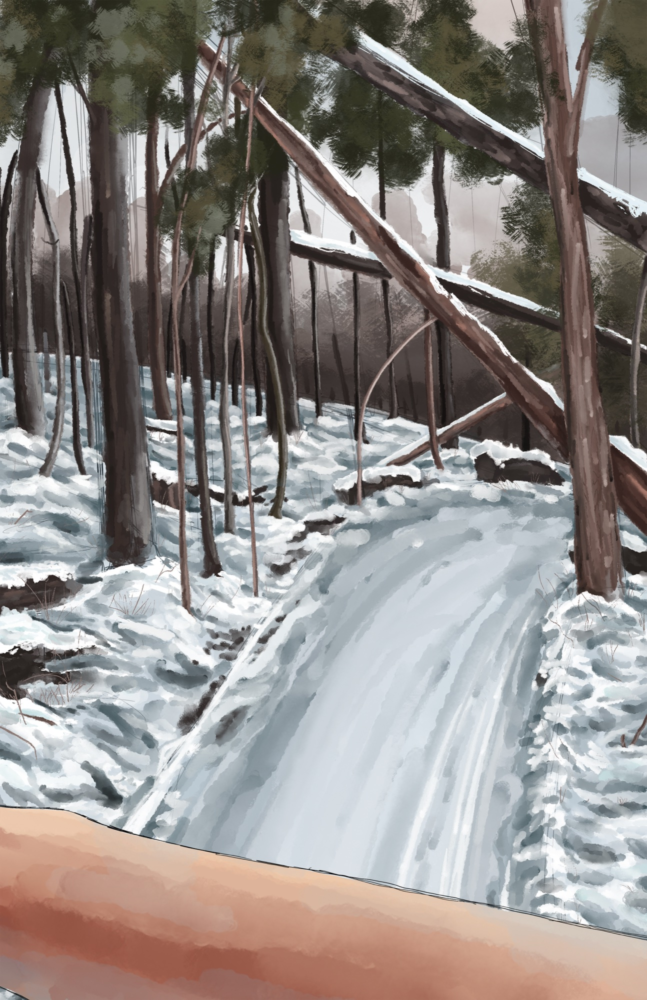
Future — snowmobiling
Composition inspired by first-person video games; unify colors to show relationship in pieces.